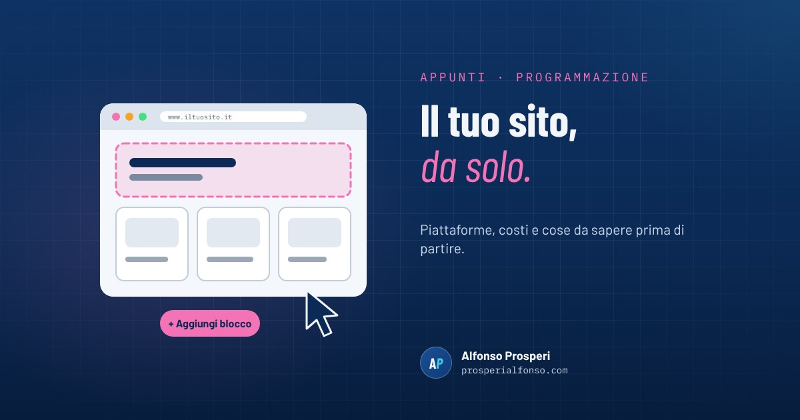

Oggi per avere un sito non serve saper programmare: esistono piattaforme che permettono di costruirlo trascinando blocchi di testo e immagini, partendo da modelli già pronti. La domanda giusta non è più "come si fa", ma "quale strada scegliere". Vediamo le principali.
Prima domanda: ti serve davvero un sito?
Per un'attività locale (un negozio, un artigiano, un professionista) il primo passo spesso è il Profilo dell'attività su Google: gratuito, compare su Maps e nelle ricerche, con orari, foto e telefono. Un sito vero serve quando vuoi raccontare di più, mostrare lavori o servizi in dettaglio, raccogliere contatti o vendere.
Le tre strade principali
- Costruttori di siti (per esempio Wix, Jimdo, Squarespace, Site123). Scegli un modello, modifichi testi e foto, e il sito è online. Sono i più semplici, con assistenza e hosting inclusi. In cambio sei legato alla piattaforma: spostare il sito altrove non è sempre facile.
- WordPress. È il sistema più diffuso al mondo. Esiste in due forme: su WordPress.com è un servizio pronto, simile ai costruttori; con la versione da installare su un tuo hosting hai la massima libertà, ma devi occuparti tu di aggiornamenti e sicurezza.
- Soluzioni gratuite di base, come Google Sites, adatte a una pagina semplice di presentazione o a un progetto personale.
Quanto costa davvero
Quasi tutte le piattaforme hanno una versione gratuita, ma di solito ha la pubblicità della piattaforma e un indirizzo poco professionale (del tipo nomesito.piattaforma.com). Per un sito con il tuo dominio, per esempio iltuonome.it, servono in genere un piano a pagamento e il dominio, che si rinnova ogni anno. Conviene guardare bene il prezzo del rinnovo, non solo quello del primo anno, spesso scontato.
Le cose da non dimenticare
- Privacy e cookie. Se raccogli dati (un modulo contatti, statistiche, mappe incorporate) servono un'informativa privacy e, quando previsto, il banner per i cookie. Il Garante per la privacy ha pubblicato le linee guida.
- Dati dell'attività. Se il sito è di un'impresa, vanno indicati i dati obbligatori, come la partita IVA.
- Sicurezza. Indirizzo con https, password robuste e verifica in due passaggi sull'account della piattaforma, aggiornamenti fatti (su WordPress soprattutto). Ne parlo in questo articolo.
- Farsi trovare. Un sito bello ma invisibile serve a poco: qualche base di SEO fa la differenza.
Il mio consiglio
Parti semplice: poche pagine chiare (chi sei, cosa fai, dove sei, come contattarti) fatte bene valgono più di un sito grande e mai aggiornato. Prova la versione gratuita della piattaforma che ti ispira, e passa a quella a pagamento solo quando sei convinto. Se poi vuoi vendere online, leggi anche l'articolo sull'e-commerce.